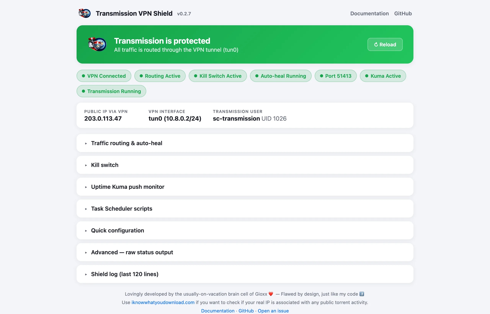
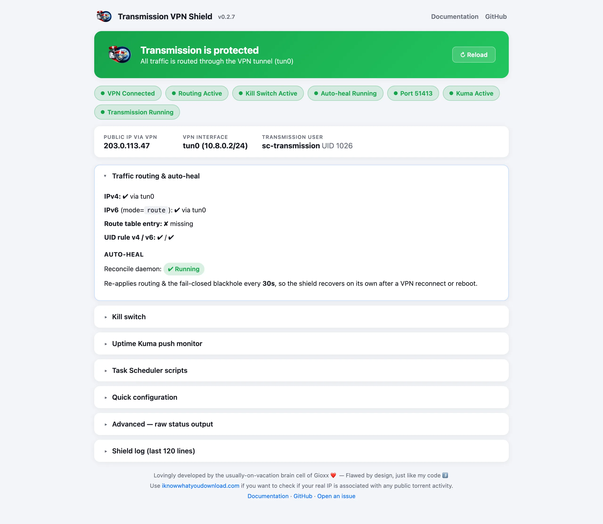
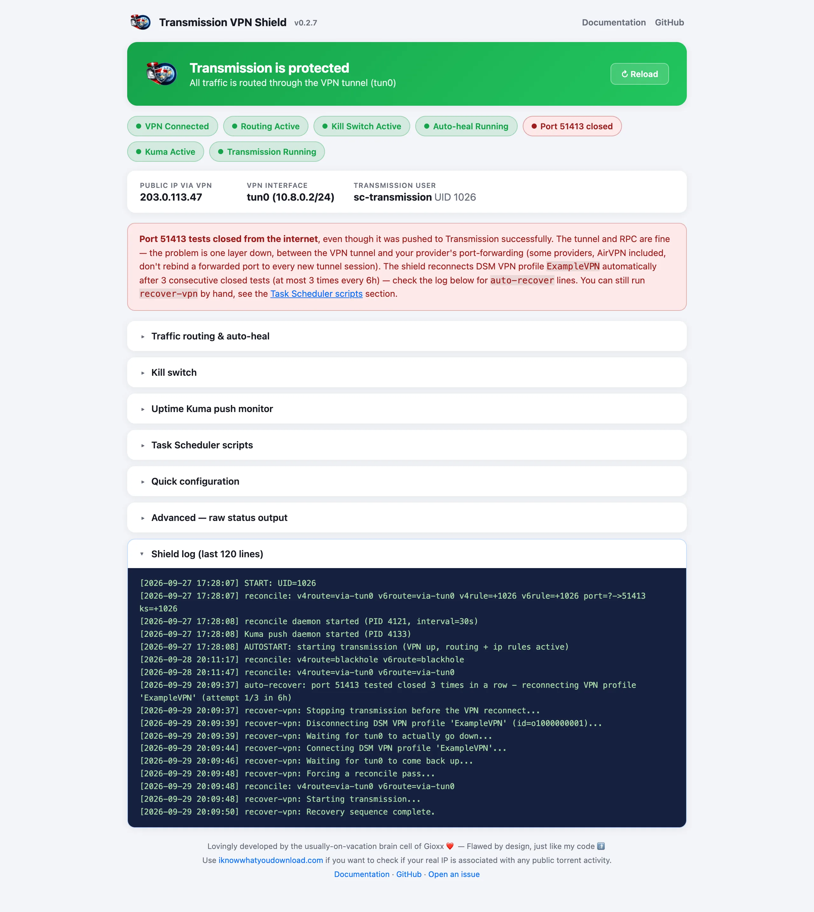
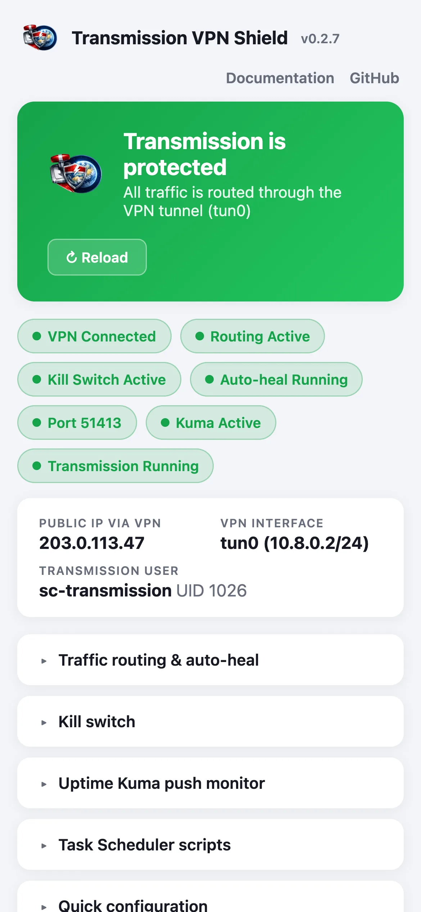

A Synology package that routes only Transmission's traffic through the VPN tunnel, blocks it when the tunnel drops, and repairs the routing on its own — with DSM VPN Center, a stuck forwarded port too — while DSM, Sonarr, Radarr and the rest of the LAN keep using your normal connection.

The shield doesn't replace your VPN client. It decides where Transmission's packets are allowed to go, and keeps that true after reconnects, reboots and upgrades.
An ip rule sends only the Transmission user's traffic to a dedicated routing table whose default route is the VPN interface. IPv4 always, IPv6 on kernels 4.10 and later.
When the VPN is down, the table gets a blackhole route: Transmission's traffic is dropped, not sent over your ISP. On kernels with xt_owner an iptables kill switch is added on top.
A reconcile pass every 30 seconds re-applies routes, rules and kill switch, so the shield recovers by itself after a VPN reconnect, a reboot or an unlucky boot order.
With DSM VPN Center, a forwarded port that tests closed 3 times in a row triggers a reconnect of the VPN profile — at most once every 30 minutes and 3 times in 6 hours.
Your provider's forwarded port is pushed to Transmission over RPC whenever its peer port differs, and tested from the internet every 10 minutes (every 2 after a closed result, until the third).
IPV6_MODE routes IPv6 through the tunnel, blackholes it, or leaves it alone. Older kernels without per-user IPv6 rules keep full IPv4 protection and log a one-time warning.
VPN, routing, kill switch, port test and the shield log at a glance, with a specific alert when something needs you. It runs as the DSM web user and never reads your RPC password.
Optional heartbeats to a Kuma Push monitor, outbound only: nothing new is exposed on your LAN. The status is up only when protection is complete and the port isn't closed.
guard.conf lives in the folder DSM preserves across upgrades, and keys added by a new version are appended with their defaults. RPC credentials sit in a separate root-only file.
The status page lives in the DSM main menu. Every check shown there is the same one the shield itself acts on.

Status page. One chip per check (VPN, routing, kill switch, auto-heal, forwarded port, Kuma, Transmission), the public IP seen through the tunnel, and the details behind each check: here, the routing table, the per-user rules and the reconcile daemon.

Forwarded port closed. The chip turns red and an alert explains what's wrong and what the shield will do about it. The log shows an earlier automatic recovery, step by step. (Scroll inside the image.)

Mobile. The page adapts to small screens, in DSM's mobile browser too.
No proxy, no container, no changes to Transmission itself: the shield works at the routing level of the NAS.
DSM 7.2 and later don't let unsigned packages ask for root at install time, so a one-off Task Scheduler job runs activate: it applies the privilege elevation, seeds the configuration and starts the shield. Run it again after every upgrade.
An ip rule for Transmission's UID points to table 200, whose default route is the VPN interface. Your LAN routes are copied into the same table, so the web UI and your other apps can still reach Transmission.
With the VPN interface down, the table's default becomes a blackhole route, and where xt_owner is available an iptables rule drops anything Transmission sends outside the tunnel. Loopback stays open for the shield's own RPC calls.
Every 30 seconds the shield re-asserts routes, rules and kill switch, pushes the forwarded port to Transmission if it changed, and refreshes the port test. It's idempotent and writes to the log only when something actually changed.
If the port keeps testing closed on a healthy tunnel, recover-vpn stops Transmission, disconnects and reconnects the DSM VPN Center profile, reconciles, and starts Transmission again only once the tunnel is back up and the shield is running.
Transmission from Package Center and a VPN connection on the NAS: that's all it needs.
Download the latest .spk from the Releases page, then in DSM open Package Center → Manual Install and upload it. The package shows as installed but not running, and its web UI shows an activation guide.
In Control Panel → Task Scheduler → Create → Triggered Task → User-defined script, set User to root, leave Enabled unchecked, and paste:
# without a forwarded port /var/packages/transmission-vpn-shield/scripts/activate # with your provider's forwarded port /var/packages/transmission-vpn-shield/scripts/activate 51413
Select the task and click Run. After a few seconds the status page turns green.
Start it from Package Center → Transmission once the shield is green. To have the shield start it for you after every restart or upgrade, set in guard.conf:
AUTOSTART_TRANSMISSION="1"
It is started only once the VPN is up and the routes and rules are in place.
Install the new .spk over the old one with Manual Install, then run the same activate task again: DSM resets the privilege elevation on every upgrade. Your settings are kept.
Everything below is also in the README, together with the changelog.
All settings live in one file on the NAS, in the folder DSM preserves across upgrades:
/var/packages/transmission-vpn-shield/etc/guard.conf
Edit it directly, or use activate / set-port, then restart the package from Package Center. With AUTOSTART_TRANSMISSION="0" a restart leaves Transmission stopped: start it again once the shield is green.
| Setting | Default | Description |
|---|---|---|
TRANSMISSION_USER | sc-transmission | User running Transmission. If it doesn't exist, transmission and debian-transmission are tried too. |
VPN_IF | tun0 | VPN interface. Find yours with ip link show; WireGuard is usually wg0. |
RT_TABLE_ID | 200 | Dedicated routing table. Change it only if another package uses 200. |
RT_TABLE_NAME | transmissionvpn | Name of the table in /etc/iproute2/rt_tables. |
ENFORCE_KILLSWITCH_WHEN_VPN_DOWN | 1 | 1 keeps the xt_owner kill switch while the VPN is down too; 0 relies on the blackhole route alone. |
RECONCILE_INTERVAL_SEC | 30 | Seconds between self-heal passes. |
IPV6_MODE | route | route sends IPv6 through the VPN, block always blackholes it, off leaves it untouched. route/block need kernel 4.10 or later. |
AUTOSTART_TRANSMISSION | 0 | 1 starts Transmission after the shield starts, only once the VPN is up and routed. |
PUBLIC_IP_REFRESH_SEC | 7200 | Seconds between refreshes of the public IP seen through the tunnel. 0 disables it. |
FORWARDED_PORT | — | Your provider's forwarded port, see below. |
RPC_PORT | 9091 | Transmission RPC port, used for the peer-port push and the port test. |
PORT_TEST_INTERVAL_SEC | 600 | Seconds between port tests. After a closed result the port is re-tested every 2 minutes, up to 3 closed results in a row. 0 disables them. |
KUMA_PUSH_URL | — | Uptime Kuma Push monitor URL, see below. |
KUMA_PUSH_INTERVAL_SEC | 60 | Seconds between heartbeats. |
DSM_VPN_NAME | — | DSM VPN Center profile name, exactly as shown in Control Panel → VPN. Enables recover-vpn. |
AUTO_RECOVER_VPN | 1 | With DSM_VPN_NAME set, reconnect the profile automatically when the port stays closed. 0 = manual only. |
AUTO_RECOVER_COOLDOWN_SEC | 1800 | Minimum seconds between two automatic reconnects. |
AUTO_RECOVER_MAX_PER_6H | 3 | Maximum automatic reconnects in any 6-hour window. |
Keys introduced by an upgrade are appended to your existing guard.conf with their default values, so there's nothing to merge by hand.
The shield talks to Transmission over RPC on 127.0.0.1. If Transmission has Enable authentication checked in its remote access settings, put the same credentials in the root-only secret file:
# /var/packages/transmission-vpn-shield/etc/guard.secret RPC_USER="youruser" RPC_PASS="yourpass"
guard.secret is created empty at install with mode 600, so the password never ends up in guard.conf, which the web UI can read. Without the right credentials the push fails: the status page shows an "RPC push failing" alert, and the log gets a warning after 3 consecutive failures. If Transmission is simply stopped, the page says that instead.
Many VPN providers let you forward a port through the tunnel, so other peers can connect to you: downloads and seeding get noticeably better. The port arrives through the tunnel, so there is nothing to open on your router or DSM firewall. Set it in one of three ways:
# A. at activation time (Task Scheduler, as root) /var/packages/transmission-vpn-shield/scripts/activate 51413 # B. later (Task Scheduler, as root) — also restarts the package /var/packages/transmission-vpn-shield/scripts/set-port 51413 # C. in guard.conf, then restart the package FORWARDED_PORT="51413"
On every reconcile pass the shield compares Transmission's peer port with FORWARDED_PORT and pushes it only if they differ. Every PORT_TEST_INTERVAL_SEC it also asks Transmission to test the port from the internet: that's what the port chip on the status page reflects, not just whether the push succeeded.
Some providers (AirVPN among them) bind a forwarded port to one tunnel session. If the binding doesn't happen, the tunnel looks healthy but the port stays closed until the VPN connection itself is redialed. With the tunnel managed by DSM VPN Center and DSM_VPN_NAME set, the shield does it for you:
recover-vpn runs in the background (look for auto-recover: lines in the log);Each run stops Transmission first (and does nothing if it can't), disconnects and reconnects the profile through the same DSM API as the Connect button, forces a reconcile, then starts Transmission. Only one run at a time: a manual run during an automatic one exits immediately.
recover-vpn only drives DSM VPN Center. The shield reconciles on its own as soon as VPN_IF is back.To force a reconnect by hand, run as root from Task Scheduler (the profile name can be omitted when DSM_VPN_NAME is set):
/var/packages/transmission-vpn-shield/scripts/recover-vpn ExampleVPN
The shield can push its health to an Uptime Kuma Push monitor every minute. The NAS only makes outbound HTTPS requests, and the unique URL Kuma generates acts as the token.
guard.conf: KUMA_PUSH_URL="https://kuma.example.com/api/push/abc123".A heartbeat is up when the VPN is up, the IPv4 route and per-user rule are in place, IPv6 is protected (unless IPV6_MODE="off") and the port test isn't closed. The message carries every check, kill switch and reconcile daemon included. To test one push:
sudo /var/packages/transmission-vpn-shield/scripts/guard-push once
Run as root via Control Panel → Task Scheduler → Create → Triggered Task → User-defined script, with Enabled unchecked, then Run when needed.
| Script | When to run it |
|---|---|
activate [port] | Once after install, and again after every upgrade. |
set-port <port> | To change FORWARDED_PORT after activation. Restarts the package. |
recover-vpn [profile] | Runs by itself with DSM_VPN_NAME set; by hand to force a reconnect when the port stays closed. |
recover-heartbeat | If a Kuma heartbeat stays down after a reconcile pass: stops Transmission, restarts the shield, starts Transmission. |
All scripts are in /var/packages/transmission-vpn-shield/scripts/.
| Path on the NAS | What it is |
|---|---|
etc/guard.conf | Configuration, preserved across upgrades. |
etc/guard.secret | RPC credentials, root-only. |
var/shield.log | Everything the shield did, also shown on the status page. Capped at 512 KB. |
scripts/start-stop-status | Package lifecycle and the reconcile pass. |
scripts/guard-reconcile | Self-heal daemon. |
scripts/guard-push | Uptime Kuma push daemon. |
Paths are relative to /var/packages/transmission-vpn-shield/.
VPN_IF to exist. With DSM VPN Center it can reconnect an existing profile; other clients reconnect from their own app.RECONCILE_INTERVAL_SEC (30 s by default), not instantly; the tunnel being down is covered in the meantime by the blackhole route.IPV6_MODE="off" to silence it.xt_owner. Many DSM builds lack it; protection doesn't depend on it, the blackhole route already fails closed.activate after every upgrade. DSM resets the privilege elevation; until then a stop from Package Center may leave rules and routes in place until reboot.DSM 7.2 and later block unsigned third-party packages from requesting root at install time. The package installs as a normal user, and the one-off root job completes the elevation and applies the routing.
The dedicated table gets a blackhole default route instead of being left empty, so Transmission's traffic is dropped rather than falling through to your normal connection — kill switch or not. This covers IPv4 always and IPv6 with IPV6_MODE set to route or block; with off the shield doesn't touch IPv6.
No. It arrives through the VPN tunnel; nothing needs to be opened on your router or DSM firewall.
The shield has done its part; the problem is between the tunnel and your provider's port forwarding. With DSM VPN Center and DSM_VPN_NAME set, the shield reconnects the profile by itself after 3 closed tests. Otherwise reconnect the VPN from your client, and check that the port on your provider's site matches FORWARDED_PORT.
The shield stops Transmission whenever it goes down, and by default doesn't start it again: the status page tells you it's stopped. Set AUTOSTART_TRANSMISSION="1" to have it started automatically, only once the VPN is up and routed.
Yes. The blackhole route drops Transmission's traffic whenever the VPN is down, with or without the kill switch.
In var/shield.log, shown on the status page too. It only gets a line when something changes, so a quiet log means nothing needed fixing.